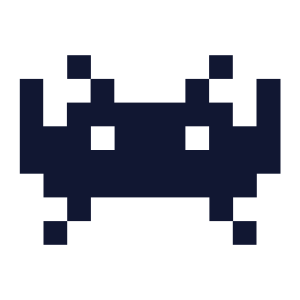
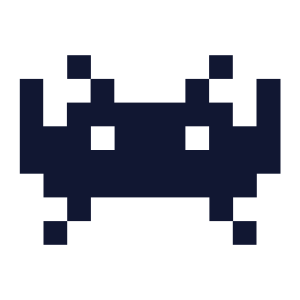
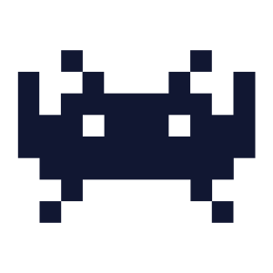
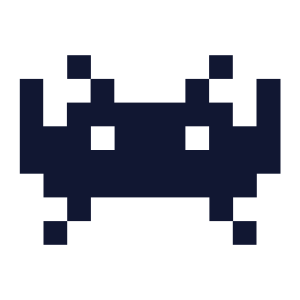

 

Draculad was created for the 3-day long Mini Jam #118 on itch.io (Play it here!) by a team comprised of myself and two of my peers.
Mini Jam #118 is a game jam where designers must abide by a 3 day time limit given a theme and a unique "limitation" that the game must follow. Teams must find a way to make the theme and limitation work together in some form during gameplay. The theme for Mini Jam #118 was "vampire", while the limitation was "blood must be lethal". My team consisted of myself, an artist, and a sound designer.
As the design director, I was tasked with coordinating pitch efforts
between our team members. This game jam was unique in that we all
wanted to expand our horizons by trying something new with our
respective specializations. For me, this meant creating finite state
machine based intelligence for enemies, and my teammates wanted to
experiment with particles and sound implementations. In the end, I was
able to unify our individual desires for this project into one
cohesive and in-scope pitch for us to develop upon.
As the sole programmer, much of my time was spent on the character
controller, implementing aforementioned FSM and locomotion for
enemies, and interpreting gameplay and mechanic related desires from
the other teammates into engine.
Our initial design for the project introduced issues that were out of scope to solve with the time we had remaining. A large part of what I learned how to do competently consisted of downsizing mechanics to fit our scope and mitigating any potential for future complications arising from our concept's design. This would primarily consist of leading team discussions on refactoring certain aspects of our game.
Mini Jam #118 had a 5 day judging period where the game was given ratings by game jam officials and the community that had submitted projects. Out of the 150 submissions made by other game jam entrants, Draculad placed #9 in overall score, landing the submission in the top 10 for the jam.